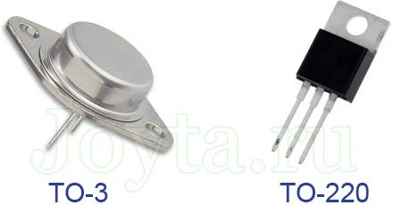
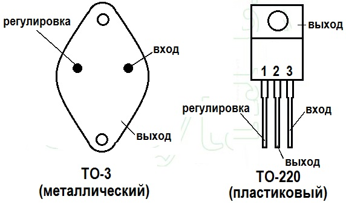
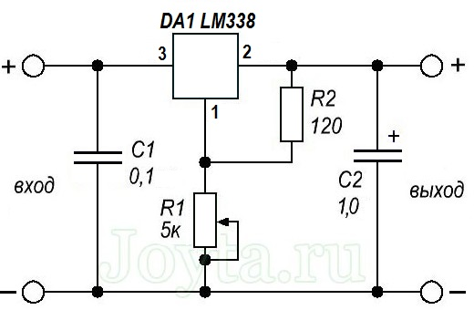

Стабилизатор напряжения LM338
Стабилизатор напряжения LM338 является универсальной интегральной микросхемой для получения высококачественных цепей питания.
Интегральная микросхема LM338 выпускается в металлическом корпусе TO-3 и в пластиковом TO-220.

Рис. 1 - Внешний вид стабилизатора LM338

Рис. 2 - Цоколевка стабилизатора LM338
Таблица 1
| Параметр | Значение |
|---|---|
| Максимальное входное напряжение | 40 В |
| Диапазон выходного напряжения | 1,25 ... 30 В |
| Выходной ток | 5 А |
| Погрешность выходного напряжения | 0,1% |
| Температура эксплуатации | 0...125 °C |
| Опорное напряжение | 1,25 В |

Рис. 3 - Типовая схема включения стабилизатора LM338
Источники
joyta.ru - LM338 регулируемый стабилизатор напряжения и тока. Распиновка, datasheet